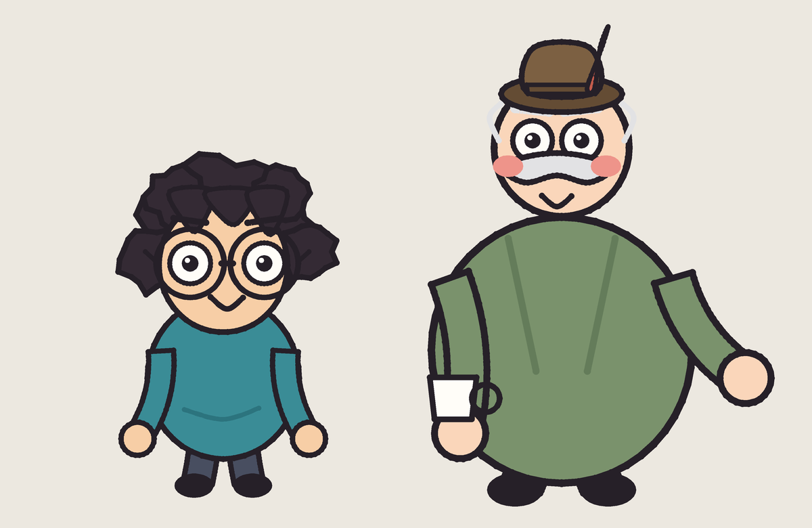
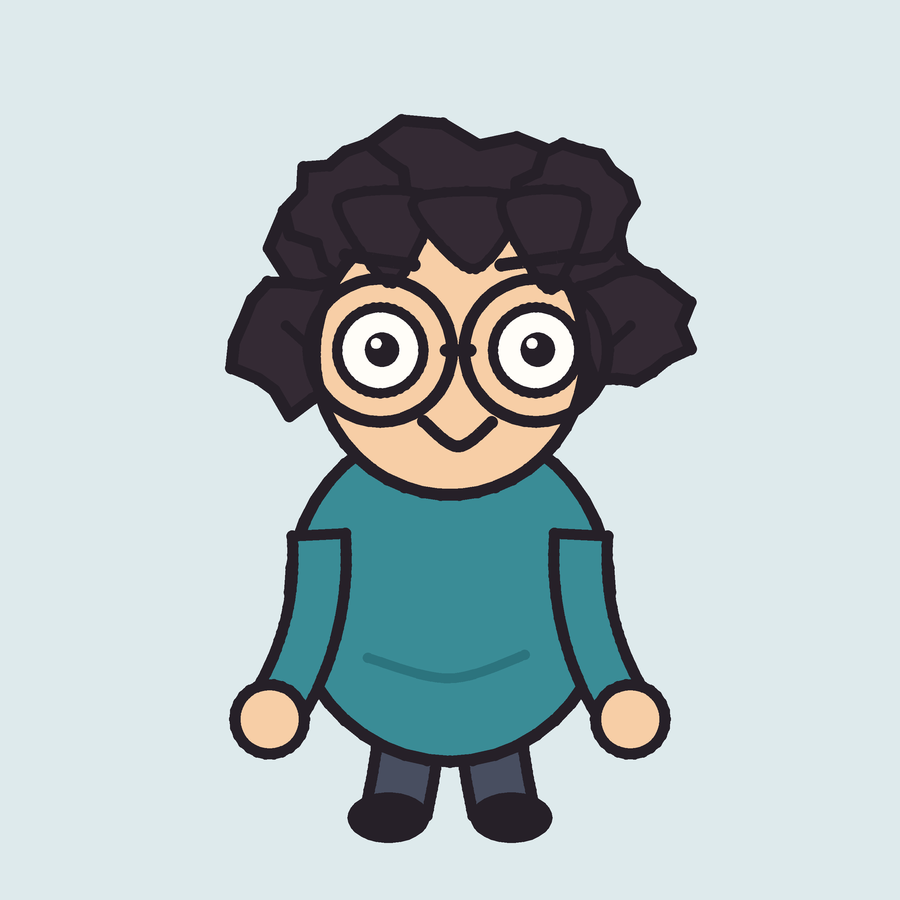
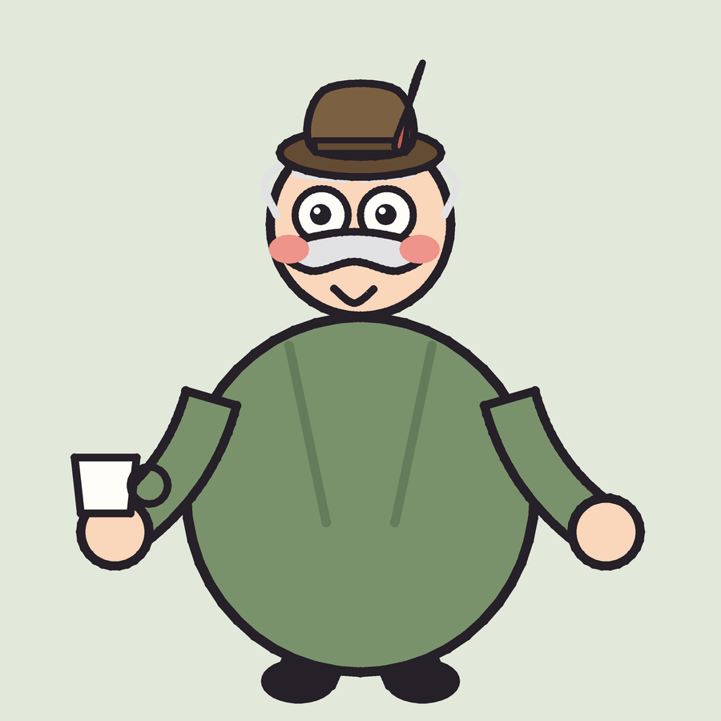

Kejadiannya begini
Pagi 17 Agustus, seorang mahasiswa Indonesia di Linz menempelkan merah putih di kaca jendelanya. Selembar kertas A4, selotip, dari dalam kamar, jam lima pagi, supaya bisa ikut upacara Jakarta yang di sini jatuh pukul 05.00.
Tetangga seberang melihatnya. Orang tua itu terharu, dan mengira anak muda itu sedang membanggakan kota Linz. Sepanjang pagi keduanya saling memuji dengan hangat, tentang dua hal yang sama sekali berbeda.
Keduanya benar. Itu bagian yang paling penting: tidak ada yang salah lihat, dan tidak ada yang perlu diluruskan.
Faktanya nyata
Bendera kota Linz adalah dua bidang mendatar sama lebar: merah di atas, putih di bawah. Versi polosnya, tanpa lambang kota, sama persis dengan bendera Indonesia.
Urutan itu bukan kebetulan. Sejak 1965 bendera provinsi Oberösterreich ditetapkan putih di atas dan merah di bawah, lalu bendera kota Linz sengaja dibalik supaya ibu kota tidak tertukar dengan provinsinya. Yang tersisa untuk Linz kebetulan sama persis dengan yang kita kibarkan tiap Agustus.
Bendera Austria merah putih merah
Tiga bidang, bukan dua: merah di atas, putih di tengah, merah lagi di bawah. Warnanya sama persis dengan warna kita, yang berbeda cuma susunannya. Dan itu sebenarnya seluruh isi film ini dalam satu kalimat.
Di depan Altes Rathaus di Hauptplatz ada tiga tiang bendera, dan sudah bertahun-tahun begitu. Yang dinaikkan berganti menurut acara: bendera kota, bendera negara, bendera Uni Eropa, kadang bendera bertema seperti bendera perdamaian kota.
Dua orang ini


Ruwet
Kepanjangannya Raden Untung Wibisono Eka Trisno. Dipanggil Ruwet karena memang itu singkatannya, dan memang itu keadaannya. Mahasiswa master AI, thesis mentok di bab tiga dari lima, dan bertahan di situ sudah lama sekali.
Di mulut orang Austria namanya keluar jadi “Rhu Vet”, u-nya panjang, e-nya tegas, dan hasilnya terdengar seperti nama dokter hewan. Dia sudah berhenti mengoreksi sejak semester pertama.
Ada satu hal lagi soal namanya. Ruwet berarti kusut, dan yang mau dia bereskan bukan cuma bab tiga. Nanti, kalau semuanya sudah selesai, ada kampung kecil di rumah yang keruwetannya menunggu orang yang mau pulang. Sekarang dia belum bisa membereskan keruwetan siapa pun, dia sendiri masih ruwet di Linz. Justru itu sebabnya dia harus selesai dulu di sini.

Herr Knödel
Tetangga seberang. Pensiunan, asli Linz, badan sebesar tong, kepala kecil, kumis melintang, dan topi Tyrolean yang jelas kekecilan. Kalau ada yang tidak beres dia bilang “Kaputt.” Datar, tanpa emosi.
Namanya juga makanan: Knödel itu bola tepung rebus, sepupu jauh pangsit. Di Austria itu nama keluarga biasa saja dan tidak ada yang menoleh. Ruwet menoleh.
Jadi keduanya sama-sama punya nama yang terdengar aneh di telinga lawan bicaranya, dan tidak satu pun dari mereka salah dengar. Itu seluruh film ini dalam satu lelucon kecil.
Dia bukan bahan tertawaan. Dia orang yang bangga pada kotanya, dan kebanggaan itulah yang bikin salah paham ini berjalan mulus sampai akhir.
Yang sebenarnya diceritakan
Kesamaan bendera itu cuma pintu masuk. Yang mau dibilang film ini ada tiga, dan ketiganya sengaja tidak pernah diucapkan sebagai kesimpulan.
Satu, nasionalisme itu pilihan pribadi. Gambar terpenting di seluruh film adalah Ruwet hormat sendirian jam lima pagi di kamar sewaan. Tidak ada yang menyuruh, tidak ada yang melihat, tidak akan ada yang tahu kalau dia memilih tidur lagi. Dia tetap bangun.
Dua, Indonesia tidak ditinggalkan, Indonesia dibawa. Dia tidak menemukan Indonesia di Austria. Dia membawanya, dalam bentuk bendera cetakan yang tintanya habis separuh, toples sambal yang tinggal seperempat, dan kebiasaan berdiri tegak waktu lagu tertentu dinyanyikan.
Tiga, bangga jadi Indonesia tidak menuntut kita menolak tempat kita berdiri. Di akhir film Knödel melepas topinya di depan upacara yang bukan upacaranya. Dia tidak ikut menyanyi, dia tidak hafal, dan itu bukan lagunya. Dia cuma berdiri diam sampai selesai. Menghormati, bukan melebur.
Judulnya punya dua arti
Yang pertama harfiah: benderanya memang sama-sama merah putih.
Yang kedua baru terbuka di akhir, waktu Knödel bicara pelan sambil memandang tiang bendera: yang sama bukan warnanya, yang sama itu rasa bangganya pada tempat yang kita sebut rumah. Kebanggaan Knödel pada Linz dan kebanggaan Ruwet pada Indonesia itu barang yang sama persis, cuma tertuju ke arah yang berbeda.
Komiknya
Naskahnya
Sepuluh adegan, 93 detik. Dialog Knödel hampir seluruhnya bahasa Indonesia; bahasa Jerman disisakan di empat titik saja, dan semuanya pendek.
Buka naskah lengkap
1 · Linz subuh
Satu gerak kamera panjang tanpa potongan: dari kabut di atas Donau, naik ke garis atap, berhenti di satu-satunya jendela yang menyala di seluruh blok. Cahayanya kuning hangat, karena itu layar laptop yang menyala semalaman.
2 · Ruwet panik
Delapan kejadian dalam sembilan detik. Alarm, kalender 17 Agustus, melompat bangun, tersangkut selimut, jatuh memipih. Printer menolak dua puluh kali. Lalu berhenti, satu detik penuh, wajahnya datar. Printer meletus, lima puluh lembar sekaligus. Satu lembar mendarat di telapaknya.
3 · Bendera miring, lalu hormat
Ditempel di kaca dari dalam. Miring. Dibetulkan, miring ke arah lain. Dibetulkan lagi, lebih parah.
Lalu semua alat komedi dimatikan. Tidak ada guncangan kamera, tidak ada potongan. Dia berdiri tegak dan hormat, ditahan tiga detik. Yang terdengar cuma dengung kipas laptop.
4 · Knödel muncul
Enam potongan dalam delapan detik. Dia melihat sesuatu, kopinya miring.
Keduanya mengacungkan jempol, tentang dua hal yang sama sekali berbeda.
5 · Ternyata sama
Bendera besar merosot turun di seberang. Empat kali bolak-balik antara benda dan wajah, makin cepat, lalu berhenti mendadak dan dibekukan satu setengah detik.
6 · Keruwetan A4
Selembar. Tambah satu. Tambah dua. Tambah empat sekaligus. Kertas menutupi seluruh jendela dan kamarnya gelap total. Dari seberang jalan, jempol teracung ke jendela yang sudah tidak bisa dilihat isinya.
7 · Terbawa terbang
Angin naik. Keduanya menyambar benderanya, dan kainnya terlepas sambil membawa mereka ikut, ke dua arah berlawanan karena apartemen mereka memang berseberangan. Atap kota melaju di bawah dalam tiga lapis kecepatan. Merpati bubar, trem lewat jauh di bawah, kacamata Ruwet lepas dan ditangkapnya sendiri, dan kopi Knödel tetap rata.
Tabrakan di Hauptplatz. Kedua bendera melayang turun menimpa mereka, dan tertukar: kain besar mendarat di pangkuan Ruwet, kertas A4 di pangkuan Knödel. Tidak ada yang menoleh.
8 · Dari tanah, mendongak
Masih terduduk waktu matanya naik ke tiga tiang: Austria, Uni Eropa, dan di tengahnya bendera yang sama persis dengan yang dia tempel pagi tadi. Dia berdiri, merogoh kertas kusut, mengangkatnya sejajar.
8b · Kota yang menunjukkannya kembali
Tujuh potongan yang makin rapat, tanpa tokoh dan tanpa kata. Tenda toko roti, trem, payung kafe, syal orang, rambu bundar, bendera Austria. Semuanya merah putih, dan semuanya sudah ada di sana sejak dulu.
9 · Lomba 17-an
Dia berhenti mendadak. Rambutnya berhenti setengah detik kemudian. Bukan barisan upacara: untaian bendera kertas antara dua tiang bambu, balap karung, kerupuk menggantung, tikar penuh makanan.
10 · Linzer Torte bertemu sambal
Loyang diletakkan tepat di sebelah kerupuk dan sambal. Dia mengambil kerupuk, mencocolnya, memasukkannya ke mulut. Tidak terjadi apa-apa. Lalu matanya membesar, dan cuma matanya.
11 · Penutup
Bendera naik di tiang bambu. Knödel melepas topinya dan memegangnya turun di sisi badan. Dia tidak ikut menyanyi, karena dia tidak hafal dan itu bukan lagunya. Dia cuma berdiri diam sampai selesai.
Dua wajah, sikap badan yang sama persis. Lalu kamar kosong, layar laptop, 60% jadi 61%.
Gambar terakhir mengulang gambar pertama: blok apartemen gelap, satu jendela menyala. Bedanya kameranya mundur bukan mendekat, dan sekarang ada selembar kertas merah putih menempel di kacanya.
Versi yang diucapkan
Di film, kalimat inti muncul sebagai kartu penutup dalam sunyi. Versi yang diucapkan tetap ada, dan tempatnya di komik dan di naskah: